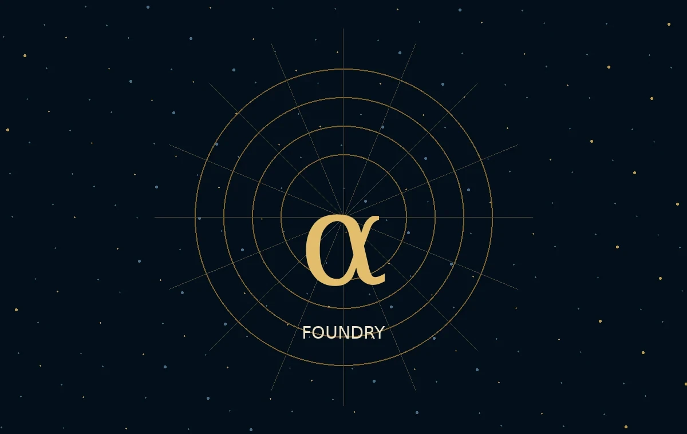

Fondée à Montréal · 2003 · Contrôle fondateur
MAISONS
Une fédération d’instruments souverains
Une institution permanente. Plusieurs expressions distinctives.
Chaque Maison possède une identité, une mission, un dirigeant, un budget et une économie propres. Toutes demeurent liées par la constitution, les normes de preuve, l’autorité du parent et la mémoire gouvernée.
La rareté protège la qualité. La preuve protège la confiance.
Maisons et domaines
Les piliers de la fédération.
Les entités ci-dessous sont les domaines institutionnels centraux. La Fonderie permet d’en constituer de nouvelles selon le projet, sans transférer le contrôle de MONTREAL.AI.
GoalOS
Maison phareDirection, stratégie, exécution, preuve, mémoire et amélioration.
Ouvrir →◈02AGI.eth
Domaine d’identitéNoms, rôles, routage, réputation, droits et autorité ENS.
Ouvrir →●03AGI Club
Réseau privéPrincipaux, opérateurs, validateurs, collectionneurs et mécènes.
Ouvrir →▲04AGI Alpha
Atelier de productionTravail machine, incitations, produits, preuve et rails de règlement.
Ouvrir →▤05Chronicle · SkillOS
Trésor de capacitéMémoire versionnée, révocable, fondée sur les preuves et sûre à réutiliser.
Ouvrir →✦06α‑AGI Sovereign Foundry
Fonderie de MaisonsCrée de nombreuses sociétés de projet propres aux objectifs, tout en gardant le parent intact.
Ouvrir →Loi de constitution
L’autonomie doit être méritée et bornée.
Une Maison ne reçoit pas une licence générale pour agir. Elle reçoit une mission, des droits, des limites, des critères d’acceptation, des normes de preuve, un budget et des mécanismes de révocation.
α‑AGI Sovereign Foundry
Créer de nombreuses Maisons. Ne jamais diluer le parent.
La Fonderie crée des entités propres à une mission, un secteur, une région ou une infrastructure. MONTREAL.AI peut y contribuer technologie, crédibilité, propriété intellectuelle, marque ou services, tout en conservant la société mère sous contrôle intégral.

Constituer la prochaine Maison.
L’entité, les droits, l’autorité, les preuves, l’économie et la succession sont définis avant que la capacité soit libérée.